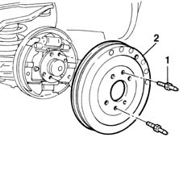

3320B30 lh or rh rear brake drum (one) r r
- Path
- Procedures > 33 BRAKING SYSTEM > 3320 DRUM BRAKES > 3320B REAR DRUM BRAKES > 3320B30 lh or rh rear brake drum (one) r r
- Kind
- repair procedure (removal / refitting; the operation number is the code)
- Applies to
- all engines; all production periods
- Interactive page
- https://sloeber94.github.io/elrnDB-fMltpl/en/#/2891597
Applies to: all engines; all production periods
 Removing
Removing
 Refitting
Refitting4450B11 WHEEL (one) rear - R.R.
1. Undo the fixing pins.
2. Remove the rear brake drum.

Applies to: all engines; all production periods
Refitting
RemovingPosition the drum.
Tighten the fixing pins to the recommended torque.
 | Fastening | Component | Ø | Value (daNm) |
|---|---|---|---|---|
- | Pin | REAR BRAKE DRUM | M8 | 1.2 |
Topics linked from this page (1)
Topics that link to this page (8)
- F01 POOR BRAKING ACTION
- H02 DRIFT WHILST BRAKING
- S30 BRAKES NOISY'
- 3320B20 Rear brake shoe CYLINDER (one) left or right - Replace.
- 3320B34 Rear brake DRUMS - R.R.
- 3330B10 REAR. DRUM BRAKES - R.R.
- 4420B34 rear suspension wishbone (one remaining)- r+r following op.4420b30
- 4450D10 hub of one rear wheel, l/h or r/h - r+r with wheel removed